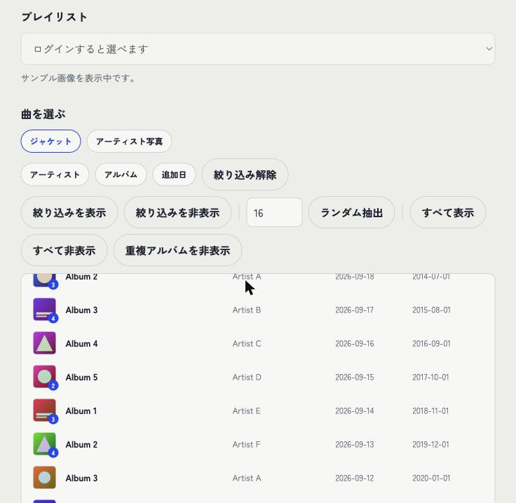
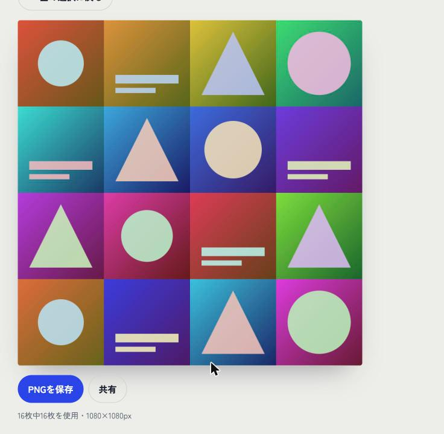

概要
Spotifyプレイリストのジャケット（またはアーティスト写真）を1枚のコラージュ画像にまとめるWebツール。SNSでプレイリストをシェアする際の視覚的なフックとして、そこから実際に聴いてもらう導線をつくることを目的に個人開発した。
背景
自分がSpotify上であるジャンルの網羅的なプレイリストを作成する時、共有機能を使いできるだけ多くのユーザに曲の追加を募ろうと思った。そこで、より多くの人を呼び込むためのきっかけとしてジャケットを並べた画像をフックとして利用しようとした。しかし、手間がかかるため本ツールの開発により、簡単にプレイリストのジャケット写真のコラージュを生成できることを目指した。
仕組み
Spotify Web APIでログインし、自分のプレイリストを選択するとジャケット画像を取得。曲の絞り込み・並び替え・比率/解像度・レイアウトテンプレートを選んで、1枚のPNG画像として書き出せる。バックエンドは持たず、単一HTMLファイル＋ブラウザのlocalStorageのみで完結するサーバーレス構成。
画面
ログイン不要の「サンプルで試す」モードでの画面。曲を選ぶテーブルUIと、書き出されたコラージュ。


主な機能
- Spotify連携：Authorization Code + PKCEフローでログイン（クライアントシークレット不要、サーバー不要）
- 画像ソースの切り替え：アルバムジャケット／アーティスト写真の2種類を、同じ選択・デザインUIで扱える
- 曲選択画面：大量のトラックを想定したテーブルUI。アーティスト／アルバム／追加日での絞り込み（ポップオーバー＋複数選択）、列見出しクリックでのソート、ランダム抽出、重複アルバムの一括非表示、ドラッグ＆ドロップでの並び替え
- デザイン画面：アスペクト比（1:1／4:5／9:16／16:9）、解像度プリセット＋幅・高さ直接指定、3種類のレイアウトテンプレート、最大32×32（1024枚）まで対応するグリッド、隙間なく敷き詰める独自の「レンガ状」レイアウト
- 出力：PNGダウンロード、Web Share API対応（モバイルでの直接シェア）
- ログイン不要のデモモード：サンプル画像で全機能を試せる
技術的に工夫した点
サーバーレスでの認証
バックエンドを持たない構成にするため、OAuthはAuthorization Code + PKCEを採用。トークンはlocalStorageに保存し、リフレッシュも含めてクライアント側だけで完結させている。
「レンガ状」レイアウトの実装
通常のn×nグリッドだと、選択した枚数が平方数でない場合に画像の重複や余白が発生する。これを避けるため、行ごとに列数を変え、画像を過不足なく敷き詰めるjustified row方式のレイアウトアルゴリズムを実装した（画像はすべて正方形カバーとして扱えるため、行の高さを画像の合計理想サイズと利用可能な高さの比でスケールするだけで実現できる）。
Spotify API仕様変更への対応
開発中、アーティスト写真取得（GET /artistsの一括取得）が403エラーになる問題が発生。Web検索でSpotifyの2026年2月の仕様変更ドキュメントを調査し、Development Modeアプリでは一括取得エンドポイントが廃止されている一方、単体取得（GET /artists/{id}）は制限対象外であることを突き止めて実装を切り替えた。エラーメッセージ自体もエンドポイントごとに正確な原因を案内するよう改善している。
大規模プレイリストを前提にしたUI設計
「曲を選ぶ」→「デザインする」の2画面構成にし、選曲は検索・絞り込み・ソート・ランダム抽出を備えたテーブルUIに寄せることで、数百曲規模のプレイリストでも実用的に扱えるようにした。